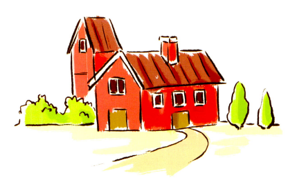
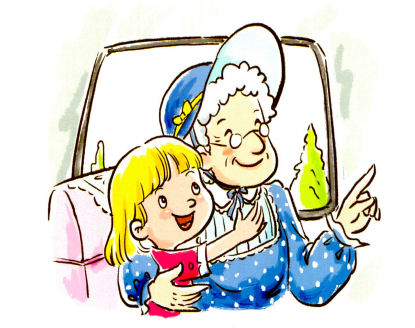

The day had come. Grandma was moving out of her big house. I was sad. I had a lot of memories in that house.

I asked where Grandma was moving to. My dad just said, "Somewhere nearby. Don't worry."
But I was worried. I spent a lot of time with Grandma. I did not want to see her any less. In fact, I wanted to see her more.
I could tell that no one wanted to tell me because they knew I would be sad. "It must be far away," I thought to myself.
We got all of Grandma's things in the truck. I sat beside her in the car. We talked the whole time.
After a while, the truck stopped. I looked out to see her new home.
It was our house! Grandma was coming to live with us.
